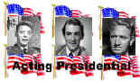

| Misadventures of James Spawn/D,B |
| Dream Theater/1998/FS 1.33 |
So what adventures do these choices lead James Spawn into? There’s a confrontation with a loud, obnoxious teacher. Poor James gets detention. There’s the silliest run-in with a female cop who stops James on the highway. And just think, there are several permutations of that confrontation to titillate with questionable taste. Just when you thought the basest humor was available on the roadside you try another girl and discover the four possibilities that exist in a photographer’s studio. Or how about a motel from Hell? One choice in each adventure even gives you four more permutations of nonsense. And if you delve deeper you can find another four choices and even more choices if you keep picking James’ path. After each adventure there’s brief foreplay at the bar before James returns to his table to once again confront the choices of the four waiting ladies.
I suppose if you find Spawn even remotely
funny, you may get a charge out of the interactivity of the disc. Personally, I found Spawn
consistently offensive. His adventures are written poorly, and the humor is bass. The majority of
the sketches are mercifully short. The few longer ones are simply torturous.
Almost every creative credit involves Ali Davoudian, so he can take the
lion’s share of the credit or blame for The Misadventures of James Spawn. Ted Davis mugs his way
through the role of Spawn, while various other actors give low-grade pornography performances. The
production team tries to dress up the DVD with some special effects reminiscent of The Mask,
but it’s next to impossible to inject any charm into the character of James Spawn.
What’s it all look like? The video and sound are acceptable. The Dolby
Digital surround is bright and not extremely active. Don’t expect any artful photography, but the
special effects are legitimate. The picture is consistently clean, but in a few instances the color
tends to fringe against the background. The interactivity works fairly easily. For my part I would
have liked a map that could have got me through the Spawn’s adventures a lot quicker with less
hunting for the added adventures. But then, I was not enjoying the experiencing of sharing my time
with James. God help us, we probably can look forward to future incarnations of James Spawn.
Thankfully, I doubt any of these will make it to movie theaters.

Selections from the feature archive include
articles on Akira Kurosawa,
Frank
Darabont, Blonde Bimbos, Hollywood Street Gangs, or Vietnam: The
Hollywood Pariah, and many more....

Watching Movies or Watching Video
Don't lose sight of why you bought that DVD in the first place.

Click on the image of The Heistmasters for an interesting feature on the tough guys that
pull off the big jobs.

Want to compare the home run swing of Jack Elliot to former Japanese Home Run King
Daryl Spencer? Click on the baseball for Fastballs in
Japan.
Roman
Holiday
Join the editor and his family on a trip through Roman movie sites in this unusual feature.

What actor would you vote whose screen persona best exemplified the fabric of the president of the United States? Check act Acting Presidential for a look at the many actors who have coveted The Oval Office.